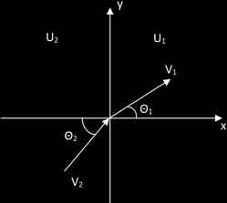

Momentum
A second conservation law follows from the homogeneity of space, by virtue of which, the mechanical properties of a closed system are unchanged by any parallel displacement of the entire system in space. By spatial homogeneity we mean that the space is the same at all points. A particle in this space will exhibit translational symmetry. We now show analytically that its momentum must remain constant.
The Lagrangian for such a particle cannot depend on its position, so instead of L(q,q̇,t) the Lagrangian is just L = L(q̇,t) (considering a single generalized coordinate for simplicity). If L is independent of the coordinate q, then
From Lagrange's equations, we therefore have
Therefore
δL/δq̇ = constant
The quantity above, that remains constant during the motion, is defined as generalized momentum
δL/δq̇ = p = generalized momentum
P = Σa δL/δva
Differentiating Lagrangian (1.6.1), we find that the momentum is given in terms of the velocities of the particles by p = mq̇ or for a system of particles the total momentum
P = Σa maq̇a
The additivity of the momentum is evident. Moreover, unlike the energy, the momentum of the system is equal to the sum of its value pa = mava, whether or not the interaction between them can be neglected.
The three components of the momentum vector are all conserved only in the absence of an external field. The individual components may be considered even in the presence of a field, however, if the potential energy in the field does not depend on all the Cartesian coordinate. The mechanical properties of the system are evidently unchanged by a displacement along the axis of coordinate which does not appear in the potential energy, and so the cooresponding component of the momentum is conserved. For example, in a uniform field in the z-direction, the x and y components of momentum are conserved.
The equation (2.2.1) has a simple physical meaning. The derivative δL/δra = -δU/δra is the force Fa acting on the ath particle. Thus the equation (2.2.1) signifies that the sum of the forces on all the particles in a closed system is zero:
Fa = 0
In particular, for a system of only two particles, F1 + F2 = 0: the force exterted by the first particle on the second is equal in magnitude, and opposite in direction, to that exerted by the second particle on the first. This is the equality of action and reaction (Newton's third law).
If the motion is described by generalized coordinates qi, the derivatives of the Lagrangian with respect to the generalized velocities
pi = δL/δq̇i
are called generalised momenta, and its derivatives with respect to the generalized coordinates
Fi = δL/δqi
are called generalised forces. In this notation, Lagrange's equations are
ṗi = Fi
In Cartesian coordinates the generalised momenta are the components of the vectors pa. In general, however, the pi are linear homogeneous functions of the generalised velocities q̇i, and do not reduce to products of mass and velocity.
Problem. A particle of m moving with velocity v1 leaves a half-space in which its potential energy is constant U1 and enters another in which its potential energy is a different constant U2. Determine the change in the direction of motion of the particle.
Solution. The potential energy is independent of the coodintaes whose axes are parellel to the plane separating the half-spaces. The components of momentum in that plane is therefore conserved. Denoting θ1 and θ2 the angles between the normal to the plane and the velocities v1 and v2, we have v1sin θ1 = v2 sin θ2. The relation v1sin θ1 = v2 sin θ2. The relation between v1 and v2 is given by the law of conservation of energy, and the result is
Let us choose the (x, y) coordinates so that the two regions are divided by the y axis:
If we consider the potential energy as a function of x as above, the Lagrangian of the particle is
L = m(ẋ2 + ẏ2)/2 - U(x)
Therefore, Lagrange's equations for the coordinates x and y are
mẍ + dU(x)/dx = 0 (2.2.2)
mÿ = 0 (2.2.3)
using the relation
mẍ = d/dt(mẋ) = dpx/dt = dpx/dt = dpx/dt ⋅ dx/dt = px/m ⋅ dpx/dx
(2.2.2) becomes
px/m ⋅ dpx/dx + dU(x)/dx (2.2.3)
Integrating (2.2.3) from any point in th region 1 to any point in the region 2, we find
px2/2m − px1/2m + U2 − U1 = 0
or, equivalently,
m(ẋ12)/2 + U1 = m(ẋ12)/2 + U2 (2.2.4)
Now, from (2.2.3) we have
d/dt mẏ = 0
and mẏ is constant. Therefore,
mẏ1 = mẏ2 (2.2.5)
From (2.3.4) we have
mẏ21/2 = mẏ22/2 (2.2.6)
Adding (2.2.4) and (2.2.5), we have
mv12/2 + U1 = mv22/2 + U2 (2.2.7)
from (2.2.5) we also have
mv12 sin θ1 = mv22 sin θ2 (2.2.8)
Substituting (2.2.7) into (2.2.8), we find the result (2.2.0). ■
This problem is the mechanical analog of the refraction of light upon passing from a medium of a certain optical density into a medium with a different optical density.